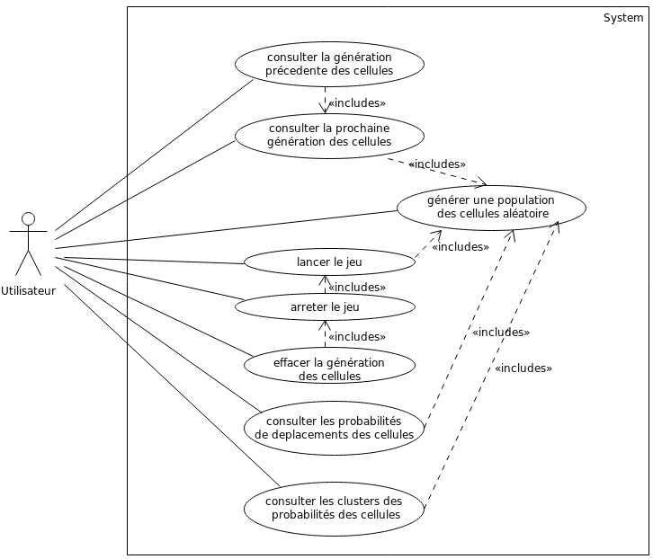
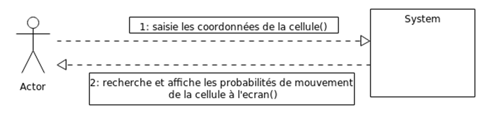
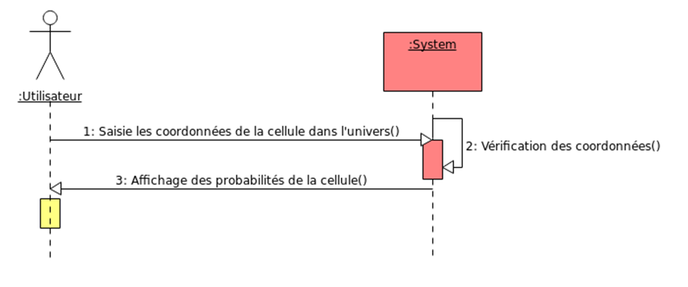
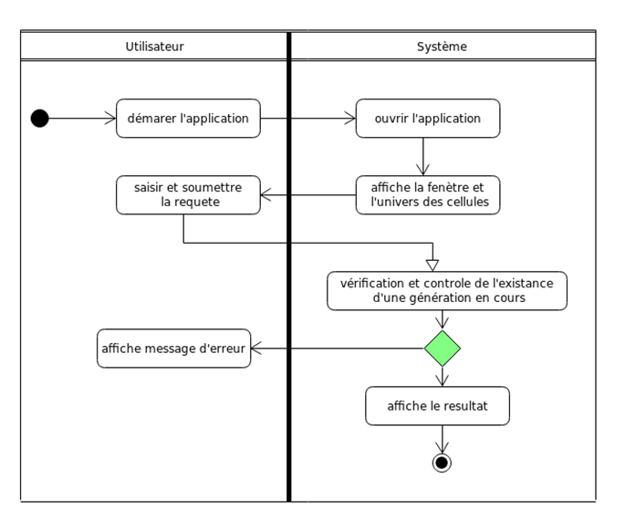

Dans le cadre de ce projet, nous avons réalisé 4 types de diagramme :
- Diagramme d'analyse
- Diagramme de cas d'utilisation
- Diagramme de conception
- Diagramme de collaboration
- Diagramme de séquence
- Diagramme d'activité
Diagramme d'utilisation

C’est un graphe d’acteurs, un ensemble de cas d’utilisation englobés par la limite du système, des associations de communication entre les acteurs et les cas d’utilisation, et des généralisations entre les cas d’utilisation.
Il est destiné à représenter les besoins des utilisateurs par rapport au système.
Diagramme de collaboration

Exemple de diagramme de collaboration: cas d’utilisation "consultation des probabilités de mouvement d’une cellule"
- Il montre une interaction organisée autour d’un ensemble d’objets et de leurs liens.
- Il ne montre pas le temps dans une dimension séparée.
- La séquence des messages et les fils concurrents doivent être déterminés en utilisant les numéros de séquence.
- C’est une autre représentation des scénarios des cas d’utilisation qui met plus l’accent sur les objets et les messages échangés.
C’est un graphe d’acteurs, un ensemble de cas d’utilisation englobés par la limite du système, des associations de communication entre les acteurs et les cas d’utilisation, et des généralisations entre les cas d’utilisation.
Il est destiné à représenter les besoins des utilisateurs par rapport au système.
Diagramme de séquence

Exemple de diagramme de séquence: cas d’utilisation de "consultation des probabilités de déplacement d’une cellule"
- Il permet de décrire les scénarios de chaque cas d’utilisation en mettant l’accent sur la chronologie des opérations en interaction avec les objets.
- Il montre ainsi une interaction présentée en séquence dans le temps.
- Il montre aussi les objets qui participent à l’interaction par leur "ligne de vie" et les messages qu’ils échangent présentés en séquence dans le temps.
Diagramme d'activité

Exemple de diagramme de séquence: cas d’utilisation de "consultation des probabilités de déplacement d’une cellule"
- Il donne une vision des enchaînements des activités propres à une opération ou à un cas d’utilisation.
- Il est attaché à une catégorie de classes et décrit le déroulement des activités de cette catégorie. Le déroulement s’appelle "flot de contrôle".
- Il indique la part prise par chaque objet dans l’exécution d’un travail. Il sera enrichi par les conditions de séquence.